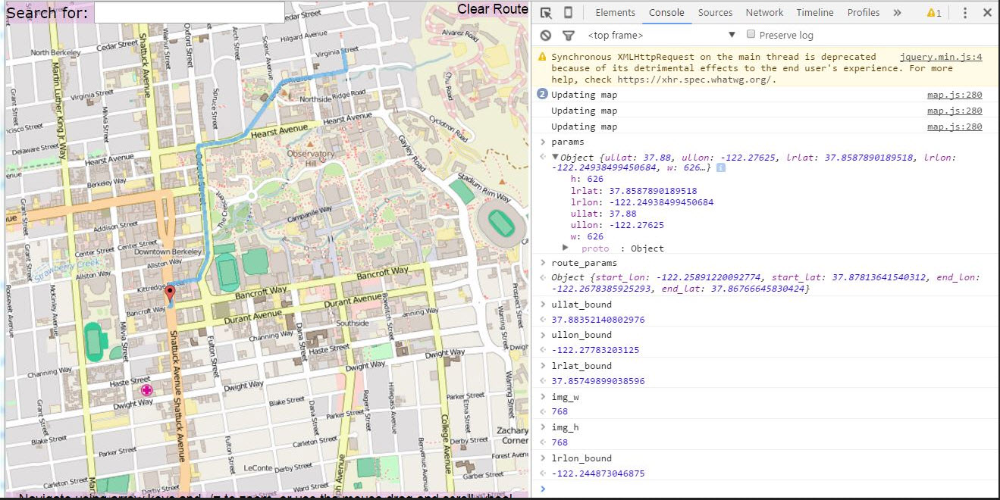

College Class Projects
NBA Analytics: Scraped and cleaned data of NBA Player statistics to perform statistical analysis on the relationship between a player's skills and salary. Written in R.

Yelp Maps: Created a visualization of restaurant ratings using machine learning and Yelp Dataset. Written in Python

Bearmaps: Rastered images on a map of UC Berkeley for zooming in and out, implemented route search between two locations, autocomplete and search locations. Written in Java
